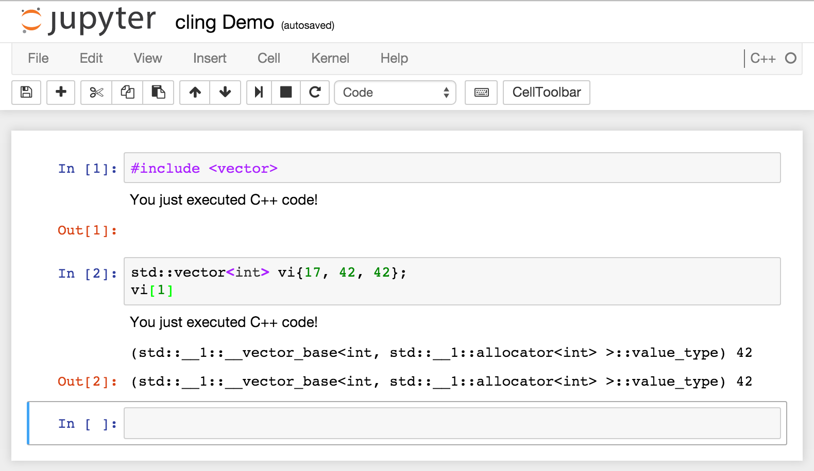

Jupyter Kernel
Cling is now integrated with the Jupyter technology through the Jupyter kernel. You can take advantage of creating a Jupyter notebook on top of runtime interpretation, you have runtime visualisation!
See also the [example notebook in cling's github repo](https://github.com/root-project/cling/blob/master/tools/Jupyter/kernel/cling.ipynb).
Prerequisites
- ipykernel ≥ 4.0
Install
To install the kernel with sources in src/tools/cling:
export PATH=/path/to/cling/bin:$PATH
cd src/tools/cling/tools/Jupyter/kernel/
pip install -e .
# or: pip3 install -e .
# register the kernelspec:
jupyter-kernelspec install [--user] cling
# or: jupyter kernelspec install [--user] cling
jupyter-notebook
# or: jupyter notebook